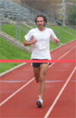

|
2003 Award Winners
|
|
|

Overall Male
Ethan Coffey |
Male SCS
Phil Gibbons |
Male Alumni
Ray Ayala |
Overall Female
Kelly Chin |
Female SCS
Bariska Toth |
Female Alumni
Amy Graveline |
Student/Advisor Pair
Student: Nidhi Kalra, Advisor: Tony Stent
Dice Prediction
The ENORMOUS FUZZY DICE came up 4 - 2 for a total of 1.5
miles and 6 people predicted this correctly:
Vince Conitzer,
Bartosz Przydatek, Guy Blelloch, Nidhi Kalra, Tom
Stapleton, KJ Helmstetter
|
| 2003 Race Summary |
|
On 4.11.03 the first annual RDR was
held at the CMU Track. A surprisingly large turnout braved the
cool, wet weather to participate. As the starting time approached
80 runners awaited anxiously as
Manuel Blum rolled the first of the ENORMOUS FUZZY DICE - a 4.
The starting gong then rang, and Ethan Coffey took off like lightning.
With the gutsy strategy of betting the second die would come up small, he
blazed the first half mile in 2:25, putting a significant lead on
the competition. As Ethan came down the home stretch of the fourth
lap, Manuel rolled the second of the ENORMOUS FUZZY DICE - a 2.
The leader's strategy had paid off, and Ethan cruised to victory.
However, two close races were yet to be decided. Among the SCS
males, Phil Gibbons and Yan Karklin were still neck and neck going into
the last 300m of the race, when Phil was able to pull away.
Even more exciting was the finish of the top two women, Kelly Chin and
Katie Aerni, who were neck and neck as they entered the final
straightaway, where Kelly inched ahead for victory.
|
| Official Results |
|
Place |
Time |
First Name |
Last Name |
Sex |
Division |
Award |
|
1
2
3
4
5
6
7
8
9
10
11
12
13
14
15
16
17
18
19
20
21
22
23
24
25
26
27
28
29
30
31 |
7:28.4
7:56.0
7:56.3
7:56.5
7:57.1
7:59.0
8:07.1
8:09.2
8:14.0
8:30.8
8:42.3
8:43.1
8:45.7
8:49.4
8:50.0
8:52.2
8:53.3
8:53.4
9:08.3
9:11.0
9:22.8
9:25.2
9:28.8
9:29.1
9:32.1
9:33.7
9:37.0
9:42.1
9:46.9
9:55.4
9:58.6 |
Ethan
Chris
Jared
Michael
Zachery
Phil
Ray
Chris
Yan
Paul
Jon
Arjunan
Mitch
Kelly
Katie
Steve
Richard
Guy
Bram
Justin
James
Tom
Neal
Jocelyn
Tony
Dave
Boriska
Franklin
Amy
James
Kevin |
Coffey
Carroll
Markowitz
Rossi
Edmondson
Gibbons
Ayala
Tremonte
Karklin
Ogilvie
Minkowsky
Rajeswaran
Radella
Chin
Aerni
Back
Unefich
Blelloch
Whillock
Samuels
Newsome
Stepleton
Martin
Sikora
Stentz
Nespoli
Toth
Chen
Graveline
Eversneyer
Watkins |
Male
Male
Male
Male
Male
Male
Male
Male
Male
Male
Male
Male
Male
Female
Female
Male
Male
Male
Male
Male
Male
Male
Male
Female
Male
Male
Female
Male
Female
Male
Male |
Undergrad
Undergrad
Undergrad
Grad
Undergrad
Prof
Alum
Alum
Grad
Grad
Undergrad
Grad
None
Alum
Undergrad
Undergrad
Alum
Prof
Undergrad
Undergrad
Grad
Grad
Alum
Undergrad
Prof
Alum
Undergrad
Alum
Alum
None
Grad |
1st Overall Male
1st SCS Male
1st Male Alumni
1st Overall Female
1st Professor
1st SCS Female
1st Female Alumni
|
|
Unfortunately, official times are
only available for the first half of the finishers.
We apologize to those whose time could not be recorded.
|
|
2003
Statistics |
|
Entrants
21 Female Entrants / 67 Male Entrants
16 Undergrads / 31 Grad Students / 13 Alumni / 6 Professors / 8 Staff
Members / 9 Organizers / 5 Others
Dice Roll Predictions
Second Roll
1 2 3 4 5 6
1 3 0 1 1 1 2
2 2 0 2 5 8 1
First Roll 3 3 4 4 6 6 1
4 1 6 3 2 0 0
5 1 4 2 2 0 0
6 1 0 2 1 1 5
|
|
2003
Participants |
|
Tina Carr
Brian Knudsen
Desney Tan
Tom Murphy
Aleksey Kliger
Micheal Donohue
Adam Wierman
Rob Reeder
Manuel Blum
Paul Ogilvie
Tomayko Tomayko
Yan Karklin
Barbara Campsie
Harry Kim
Maverick Woo
Jason Ernst
Duane Williams
Amy Erkins
Dave Nespoli
Taka Osogami
Jason Reed
Jonas August
Sanjit Seshia
Brendan McMahan
Nathaniel Manista
Vincent Conitzer
Jerry Zhu
June Sison
Joe Valeri
Jonathan Moody
Bartosz Przydatek
Ted Bulwinkle
Katie Aerni
Bram Whillock
Jon Minkowsky
Ke Yang
KJ Helmstetter
Chris Tremonte
Tom Stepleton
Gil Jones
Pradeep Ravikvmar
Derek Dreyer
Nidhi Kalra
Dirk Kalp
|
Justin Samuels
Michael Rossi
Robert Wooldridge
Kelley Sacco
Shuchi Chawla
Donna Malayeri
Franklin Chen
Phil Gibbons
Arjunan Rajeswaran
Jeff Wagner
Todd Turco
Chris Colohan
Jennifer Denmark
Frank Pfenning
Ashley Krankowski
Boriska Toth
Guy Blelloch
Ray Ayala
Kelly Chin
Chris Carroll
Mitch Radella
Jared Markowitz
Ethan Bold
Tony Stentz
Dawn Song
James Newsome
Ethan Coffey
Dan Maynes-Aminzade
Casey Helfrich
Rachel Reynolds
Richard Unefich
Kevin Watkins
Amy Graveline
Steve Back
Andlens Pfenning
Daniel Neill
Zachery Edmondson
Kimberly Kicielinski
Kate Hollabaugh
Jocelyn Sikora
John Graham
Peppy Graham
James Eversneyer
Neal Martin
|
| Thank
You |
|
Our
thanks go out to Manuel Blum for providing the randomness; Tina Carr for
arranging the TG; Tom for his artistic work; Michael, Aleksey, Brian, and
Desney for Race Day help; Avrim Blum for providing the starting gong;
DEC/5; and everyone else who participated!
|